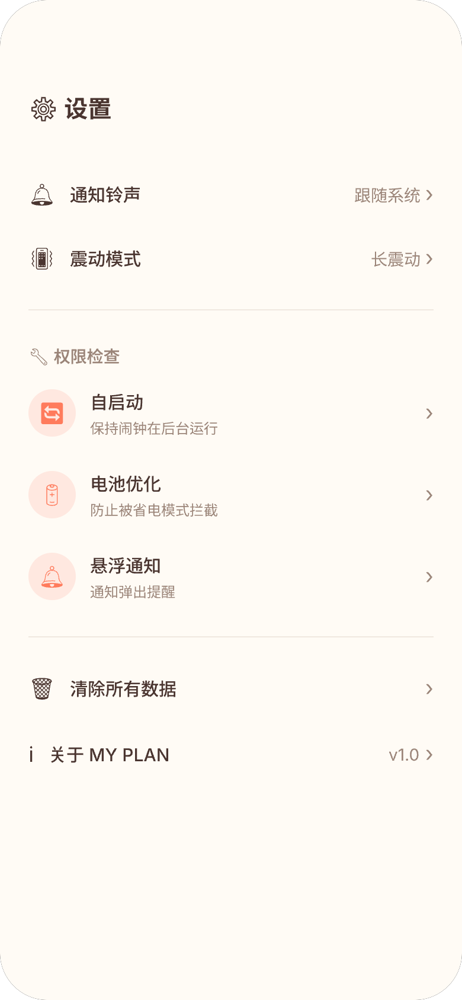

"数据崇拜"：用户为了凑时长而学习
番茄ToDo通过热力图和排行榜推崇"时长至上"。用户从"完成任务"异化为"凑学习时间"。2025年学术论文指出1：产品通过多模态符号暗示"不自律=错误"，将责任全部转嫁给个体。
- 放弃计时器设计为浅灰色+红色确认按钮
- 45%用户认为时间管理APP对自律"无效"2
以"打卡天数"替代"计时时长"
不关心专注了多少分钟，只关心完成了多少件实事。连续打卡天数 + 7天庆祝弹窗——正向激励而非焦虑驱动。
- 度量标准是"完成数"，无法伪造
- 分类统计揭示哪类习惯坚持得最好
自习室制造同侪焦虑
公开暴露专注数据——被用户称为"难以承受""特别丢脸"。学术论文归类为"邀请式监视"1。
刻意不做社交
自律是私人的事。无排行榜、无自习室。唯一的"比较"对象是昨天的自己。
学霸模式存在绕过漏洞
用户自述通过Home键、分屏、通知栏等方式绕过限制。对Android碎片化适配不足。
不做锁机，用提醒闭环替代物理限制
闹钟级提醒确保用户注意到。自律不在于锁住手机，而在于养成习惯。
知道"学了多久"但不知道"为什么管不住自己"
只有正向计时，没有负向溯源。不知道刷了多久抖音、玩了多久游戏。
分类打卡让用户看到行为模式
当"健康类"完成率远低于"学习类"，自然知道该调整什么。
严肃工具让人坚持不下去
Forest用种树+真树种植获得全球喜爱。番茄ToDo唯一的"成就感"是热力图色块。
7天庆祝+分类卡片=正向激励闭环
连续打卡7天触发庆祝。每个分类独立颜色——被鼓励而非被惩罚。
"三个月VIP只用了第一个月"
定价¥58/年，学生反映"只有假期才能用到"。无永久VIP选项。
核心功能完全免费
计划创建→闹钟提醒→打卡统计全免费。
从不主动告诉你该怎么做
唯一交互：用户打开→设番茄钟→开始计时。从不分析模式给出干预。
准时提醒=主动教练的第一步
不依赖用户主动打开——闹钟时间到了主动提醒。
| # | 痛点 | 严重程度 | FocusFlow 应对 | 差异化度 |
|---|---|---|---|---|
| 1 | 数据崇拜 | 核心缺陷 | 打卡天数替代计时 | 根本性差异 |
| 2 | 自习室焦虑 | 严重 | 刻意不做社交 | 结构性差异 |
| 3 | 锁机漏洞 | 严重 | 提醒闭环替代锁机 | 理念差异 |
| 4 | 行为根源缺失 | 功能空白 | 分类统计揭示模式 | 体验差异 |
| 5 | 缺乏趣味性 | 高 | 7天庆祝+分类卡片 | 体验差异 |
| 6 | 付费体验差 | 中 | 核心功能完全免费 | 模式差异 |
| 7 | 被动无教练 | 中 | 闹钟主动提醒 | 品类升级 |
🍅 番茄ToDo：约束型哲学
"你的意志力不够强，我来替你做决定"
- 📏 度量：学习时长
- 🎯 驱动：焦虑 + 惩罚
- 👥 关系：监视与被监视
🔔 FocusFlow：激励型哲学
"准时提醒你，剩下的交给你自己"
- 📏 度量：连续打卡天数
- 🎯 驱动：提醒 + 成就感
- 👥 关系：自己与自己
典型用户：一线/新一线城市、互联网(产品/设计/研发/运营)、管理岗、教育、医疗、法律、创意行业的脑力工作者，以及在校大学生。使用场景：日程规划 · 任务管理 · 番茄专注 · 学习备考 · 项目跟踪。
▲ 数据来源：Todo清单官方用户画像（evetech.top） · 应用宝 2026.4 · AppChina 2025-2026
| 功能维度 | Todo清单 | MY PLAN | 差异说明 |
|---|---|---|---|
| 任务创建 | ✅ 快速创建 · 自然语言输入 | ✅ 分类+名称+描述 | 均支持快速创建，路径不同 |
| 多提醒模型 | ❌ 1任务=1提醒 | ✅ 1计划=N条提醒 | MY PLAN 核心优势 |
| 重复模式 | ✅ 每天/工作日/自定义 | ✅ 每天/工作日/自定义 | 持平 |
| 提醒通道 | ⚠️ 依赖系统日历 | ✅ AlarmManager 自包含 | MY PLAN 更可靠 |
| 提醒强度 | ❌ 通知级 · 易忽略 | ✅ 通知级+闹钟级 | MY PLAN 独有 |
| 分类体系 | ✅ 有分类 | ✅ 6类预设+独立配色 | 持平 |
| 番茄专注 | ✅ 内置+白噪音 | ❌ 无 | Todo清单优势 |
| 数据复盘 | ✅ 周报+统计报告 | ✅ 连续天数+分类柱状图 | 各有所长 |
| 桌面端 | ⚠️ Electron · 需付费 | ❌ 无（移动端优先） | 定位不同 |
| 定价 | ¥168 买断 | 免费 | MY PLAN 免费全功能 |
图例：✅ 完整支持 / ⚠️ 部分支持 / ❌ 不支持
"每天早晚各提醒一次吃药" → 被迫创建 2 个独立任务
打卡 ×2 · 统计分散 · 修改要改两处 · 用户心智中"吃维生素"是一个目标
"每天早晚各提醒一次吃药" → 1 个计划 + 2 条提醒时间
打卡 ×1 · 统计按计划汇总 · 修改一处同步 · 工具适配人而非人适配工具
人对未完成的目标保持认知警觉。拆成两个任务后混淆了"我到底完成了没有"——完成一个还有另一个在列表里，大脑无法释放认知资源。
脑力工作者工作记忆已饱和。管理多个"假任务"条目增加了无关认知负荷。工具应该减负，不是增负。
用户心智中"吃维生素"是一个目标。工具拆成两个条目后，用户必须在脑中重新合并——这一翻译成本每次使用都在重复。
| 场景 | Todo清单 | MY PLAN | 效率提升 |
|---|---|---|---|
| 创建"每天 1 次提醒" | 4 步 | 3 步 | -25% |
| 创建"每天 2 次提醒" | 8 步（2个任务） | 4 步（1个计划） | -50% |
| 创建"每天 3 次提醒" | 12 步（3个任务） | 5 步（1个计划） | -58% |
| 当天完成打卡 | 打 2-3 次卡 | 打 1 次卡 | -50%~67% |
| 查看月度统计 | N 条分散记录 | 1 个计划完整趋势 | 信息聚合 |
- 设计驱动：马尔斯绿极简风+单弹窗完成所有设置，是效率工具中少有的"好看又好用"。
- 艾宾浩斯记忆模式：将心理学方法论融入产品功能，学玩一体。
- 数据复盘报告：周报+统计的系统化呈现，提升用户留存。
- 买断制定价：在订阅制主流中形成差异，降低用户决策门槛。
- 系统日历依赖：将提醒可靠性转嫁给用户和系统日历——MY PLAN 的核心价值恰是闹钟级可靠。
- Electron 桌面端：非原生体验 + 需付费——MY PLAN 若拓展桌面应走原生路线。
- 1:1 任务-提醒模型：产品架构的根本缺陷，无法简单修复。
- 番茄钟方向：偏离 MY PLAN 定位（提醒而非专注），不做功能堆砌。
| # | 差异化维度 | 市场现状 | MY PLAN 定位 | 竞争力 |
|---|---|---|---|---|
| 1 | 一对多提醒模型 | 四款工具中唯一 | 1计划=N条提醒 · 1次打卡 · 1条统计 | 独家 |
| 2 | 闹钟级提醒 | 四款工具中唯一 | AlarmManager 30秒循环 | 独家 |
| 3 | 自包含提醒 | Todo清单依赖系统日历 | AlarmManager 零外部依赖 | 技术壁垒 |
| 4 | 移动端优先 | 其他竞品全平台 | 提醒场景天然在手机上 | 定位精准 |
1 应用宝. Todo清单官方页面（V4.4.6, 8.5万下载, 5433人评分, 评分5.0, 34条评论）. 2026.4.
2 AppChina应用汇. Todo清单用户评论（好评率71%）. 2025-2026.
3 Todo清单官方. 用户画像数据（基于3万+活跃用户问卷）. evetech.top. 2025.
4 什么值得买. 「todolist测评｜滴答清单,Todo清单,到底怎么选？」2025.
5 什么值得买. 「日程管理APP月视图功能横评」2025.
6 豆瓣. 「Todo清单使用体验」「分享怒花300+测评22个待办App」用户讨论. 2025.
7 LINUX DO. 「各位佬 ToDo 类工具求推荐」用户讨论. 2025.
8 V2EX. 「非管理层打工人的ToDoList是不是个伪需求」「有没有好的计划管理工具」2024-2025.
9 知乎. 「todo list测评对比」「如何评价Todo清单」. 2024-2025.
10 各产品官网与公开定价数据. 2026.6.



暖阳手账 — 秋日午后暖黄色为基调，传递温和、治愈的产品调性
主背景
强调色
强调浅色
主文字
副文字
分割线
卡片黄
卡片绿